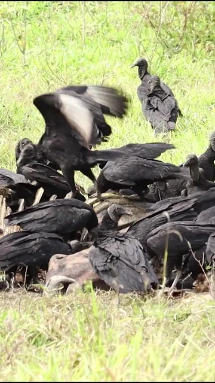
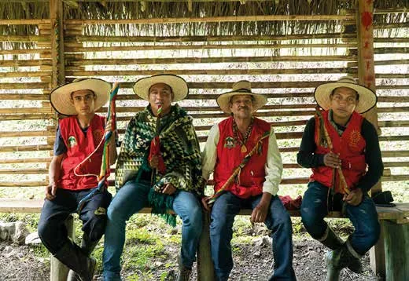
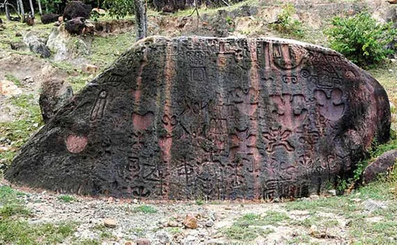
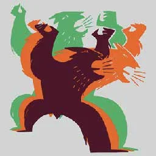
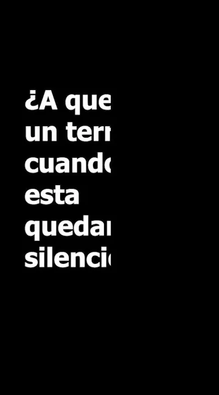

Video reel estético
Del estigma colonial al despojo territorial: un recorrido corto que termina en «memoria, dignidad y resistencia».
Ver en YouTubeConoce la historia, la cultura y la gastronomía del pueblo Pijao, recorre su territorio en realidad virtual y ayuda a proteger su territorio.

Cuatro puertas para entrar a la memoria viva del pueblo Pijao.

Casi un siglo de resistencia frente a la conquista y la lucha de hoy por el territorio.
Leer la historia →
Cosmovisión, pintura corporal, orfebrería, piedra tallada y tejidos.
Conocer la cultura →
La chicha de cuesco paso a paso: receta, cocción y fermentación.
Ver la receta →
Las tres piezas del proyecto: material visual, página web y recorrido virtual.
Ver los productos →Fuente: Ministerio de Cultura, caracterización del pueblo Pijao. Son cifras del censo de 2005 y pueden haber cambiado.
Un recorrido en 3D por un territorio Pijao. Camina entre palmas de cuesco y viviendas de bahareque, lee los carteles de bienvenida y de resistencia, entra al Bohío para preparar la chicha de cuesco paso a paso y recorre una galería de siete marcos con fotografías, datos y fuentes sobre el pueblo Pijao.
Ver Realidad virtualDos piezas audiovisuales del proyecto para contar lo que pasó, lo que se perdió y lo que todavía se puede cuidar.

Del estigma colonial al despojo territorial: un recorrido corto que termina en «memoria, dignidad y resistencia».
Ver en YouTube
Una pregunta directa para quienes consumen contenido en redes y todavía no conocen la historia del territorio.
Ver en InstagramTres productos que cuentan la historia del pueblo Pijao en distintos formatos.
Ilustraciones digitales, un video reel y una campaña para redes sociales.
Ver las piezasSiete secciones que conectan historia, cultura, gastronomía y equipo.
Ver la páginaUn recorrido en realidad virtual por un territorio Pijao, con tres estaciones.
Ver el recorrido